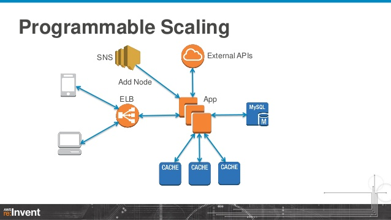

Cache拯救世界
一、加速用Cache
但凡有点规模的服务应用，都不得不面对这样的问题，就是随着数据的增加，数据库查询时间不断变长，最后导致响应时间的增加，成为系统的瓶颈。 Sql查询的优化很重要，不管是该有的索引，查询复杂度，还是数据库系统设计本身的分表、分库、分布式，都可以在这个问题上找到自己的价值。 但相比较高风险、高投入的数据库重设，Cache的引入无论从效果还是可行性上都不可能被忽视。
Cache的定位决定了它在提高单笔查询速率方面有着巨大的作用，但面对写频繁的业务需求来说，就变得比较无力。 但，不管怎样，加速不用Cache，一定匪夷所思。
当然，我们这里不是要讲前端的Cache，诸如浏览器Cache，或是CDN这种，也不是CPU的cache那种底层，我们只是讲Server层次的Cache。
比如这样经典的设计： 
二、Cache的设计
Cache的设计第一原则是，IO越频繁越要有Cache。
web服务器系统中IO最频繁的无疑是数据库，所以对业务中频繁请求的数据表做cache很有必要。 一般来说，把数据读到内存中会比从数据库中查询快很多，所以诞生了像Memcached和Redis这样的内存型缓存系统。 这种Key-value式的数据存储系统对复杂业务需求不够能力，但做cache非常有效。当需要查询数据的时候先去Memcached上找可以比Mysql节省很多的时间。
三、Memcached vs Redis
在技术选型方面应该好好考虑的。感谢这个好时代，市场上有很多优秀的、开源的系统可以选择。 同样的IN-Memory数据系统中Memcached是比较早的系统，久经考验。redis出现比较晚，有很多前者的经验与反思，比如支持一定程度的持久化（Memcached不保存数据）。
两者的差别，Redis的作者给出了自己的看法：
You should not care too much about performances. Redis is faster per core with small values, but memcached is able to use multiple cores with a single executable and TCP port without help from the client. Also memcached is faster with big values in the order of 100k. Redis recently improved a lot about big values (unstable branch) but still memcached is faster in this use case. The point here is: nor one or the other will likely going to be your bottleneck for the query-per-second they can deliver.
You should care about memory usage. For simple key-value pairs memcached is more memory efficient. If you use Redis hashes, Redis is more memory efficient. Depends on the use case.
You should care about persistence and replication, two features only available in Redis. Even if your goal is to build a cache it helps that after an upgrade or a reboot your data are still there.
You should care about the kind of operations you need. In Redis there are a lot of complex operations, even just considering the caching use case, you often can do a lot more in a single operation, without requiring data to be processed client side (a lot of I/O is sometimes needed). This operations are often as fast as plain GET and SET. So if you don’t need just GEt/SET but more complex things Redis can help a lot (think at timeline caching).
翻译：
没有必要过多的关注性能。由于Redis只使用单核，而Memcached可以使用多核，所以在比较上，平均每一个核上Redis在存储小数据时比Memcached性能更高。 而在100k以上的数据中，Memcached性能要高于Redis，虽然Redis最近也在存储大数据的性能上进行优化，但是比起Memcached，还是稍有逊色。 说了这么多，结论是，无论你使用哪一个，每秒处理请求的次数都不会成为瓶颈。.
你需要关注内存使用率。对于key-value这样简单的数据储存，memcache的内存使用率更高。如果采用hash结构，redis的内存使用率会更高。当然，这些都依赖于具体的应用场景。
你需要关注关注数据持久化和主从复制时，只有redis拥有这两个特性。如果你的目标是构建一个缓存在升级或者重启后之前的数据不会丢失的话，那也只能选择redis。
你应该关心你需要的操作。redis支持很多复杂的操作，甚至只考虑内存的使用情况，在一个单一操作里你常常可以做很多，而不需要将数据读取到客户端中（这样会需要很多的IO操作）。 这些复杂的操作基本上和纯GET和POST操作一样快，所以你不只是需要GET/SET而是更多的操作时，redis会起很大的作用。
理论上说，完全的内存IO的Memcached会强于Redis，但实际上，Memcached使用的Libevent的牺牲了很多的性能，而redis自己实现了简易好用的网络传输协议，而这个造成了网络IO拖了memcached的后腿。 另外一个Memcached的优势是业界有很多集群化的方案，相对比较成熟，而Redis 3.0才刚刚推出了集群，做shard的方案还是要小心谨慎，自己设计好一致性哈希方案，实现横向拓展以及预防一些机器下线的问题。 我个人会很喜欢Redis，主要是因为Redis可以做持久化，不仅可以用来做cache，而且可以做MQ容器，可以一定程度代替数据库。另外速度也没有差很多。 如果真的遇到Redis无法承受的业务，再在那些局部的数据访问上用Memcached就好了——不过很难想象会有这样的场景发生，因为瓶颈一定发生在别的地方;-)
另外，Redis在遇到复杂的数据结构查询时，尽量考虑使用lua脚本，直接返回结果，很多client端的redis库在面对复杂数据结构或者业务逻辑时会拖慢很多速度。
四、Cache不是万能药
基本上现在遇到性能问题，或者是用户体验不好，都会先想到哪里可以上cache，减少IO延时，减少系统负载。 Cache的引入的确在很多时候可以优化性能，提高体验，但如果cache上完了又出现新的性能瓶颈怎么办呢？那就上更多的机器吧。 所以可能最后系统架构上考虑好横向拓展很重要，不然每走一步都是新的问题。
Authors and Contributors
Qiqidone (@qiqidone) can be founded GitHub.